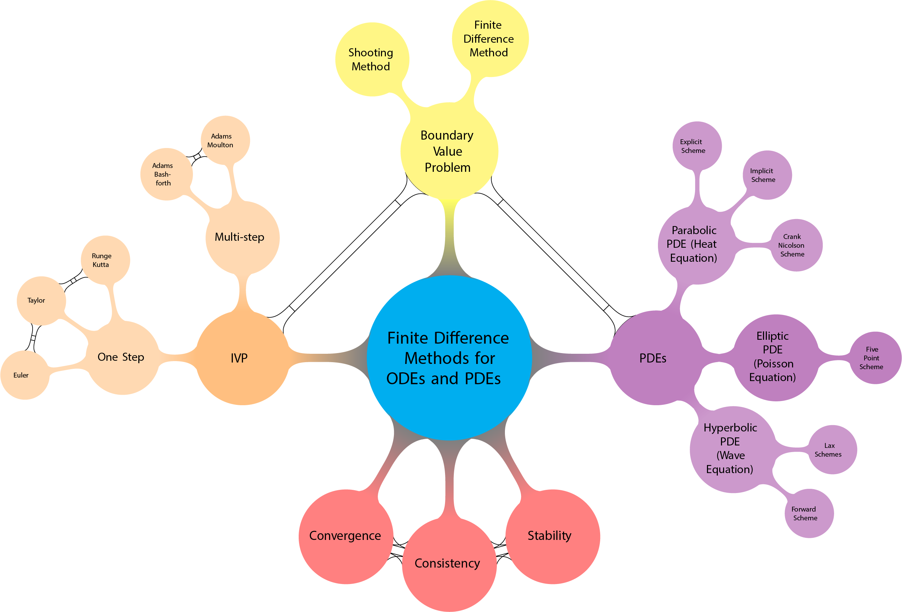

Numerical Analysis with Applications in Python#
This is Jupyterbook for the course notes Numerical Analysis for Ordinary and Partial Differential Equations.
If you have trouble viewing the jupyter files copy the link and paste into the nbviewer website.

Part 1 Numerical Solutions to Ordinary Differential Equations#
Chapter 1 Numerical Solutions to Initial Value Problems#
Euler Method applied to Linear Population Equation

Euler Method applied to Non-Linear Population Equation
Chapter 2 Higher Order Methods#
Taylor Method applied to Non-Linear Population Equation
Chapter 3 Runge–Kutta methods#
Runge Kutta applied to Population Equations
Chapter 4 Multi-step methods#
Adam-Bashforth Method (explicit) applied to Population Equations
Adams-Moulton Method (implicit) applied to Population Equations
Predictor-Corrector Method
Chapter 5 Analsyis of Methods for Initial Value Problems#
Consistency
Convergence
Stability
Further Notes on Consistency, Convergence and Stability
Part 2 Numerical Solutions to Boundary Value Problems#
Chapter 6 Boundary Value Problems#
Linear Shooting Method
Non-Linear Shooting Method
Finite Difference Method
Part 3 Numerical Solutions to Partial Differential Equations#
Chapter 8 Parabolic equations (Heat Equation)#
Explicit Finite Difference Method
Implicit Finite Difference Methods
Crank Nicolson
Chapter 9 Elliptic PDE’s (Poisson Equation)#
Homogenous Equation
Inhomogeneous Equation with zero boundary conditions
Inhomogeneous Equation with non-zero boundary conditions
Chapter 10 Hyperbolic Equations#
Wave Equation
Wave Equation Lax-Friedrich Method
Wave Equation Lax-Wendroff Method
Burger Equation
References#
[1] Strogatz, S. Nonlinear dynamics and chaos: with applications to physics, biology, chemistry, and engineering (studies in nonlinearity), Westview Press; 2 edition (29 July 2014)
[2] Brian Bradie, A Friendly Introduction to Numerical Analysis
[3] Atkinson, Han Elementary Numerical Analysis
[4] Richard L. Burden, J. Douglas Faires, Numerical Analysis, Brooks/Cole 1997
[5] J. Stoer and R. Bulirsch, Introduction to Numerical Analysis, Springer-Verlag 1980
[6] G D Smith Numerical Solution of Partial Differential Equations: Finite Difference Method Oxford 1992
Supplementary Video Lectures#
Steven Strogatz. (2021, March 1). Nonlinear Dynamics and Chaos - Steven Strogatz, Cornell University [Video]. YouTube. https://www.youtube.com/playlist?list=PLbN57C5Zdl6j_qJA-pARJnKsmROzPnO9V
Popular Videos#
The Relationship Equation - Numberphile. (2015, April 3). [Video]. YouTube. https://www.youtube.com/watch?v=BkOIw7vAZCQ
How Wolves Change Rivers. (2014, February 13). [Video]. YouTube. https://www.youtube.com/watch?v=ysa5OBhXz-Q
Popular Press Reading#
Tree, I. (2018). Wilding: The return of nature to a British farm. Pan Macmillan.
Strogatz, S. (2004). Sync: The emerging science of spontaneous order. Penguin UK.
Podcasts#
Strogatz, S. (2019-2021). Joy of X. Quanta Magazine. https://www.quantamagazine.org/tag/the-joy-of-x